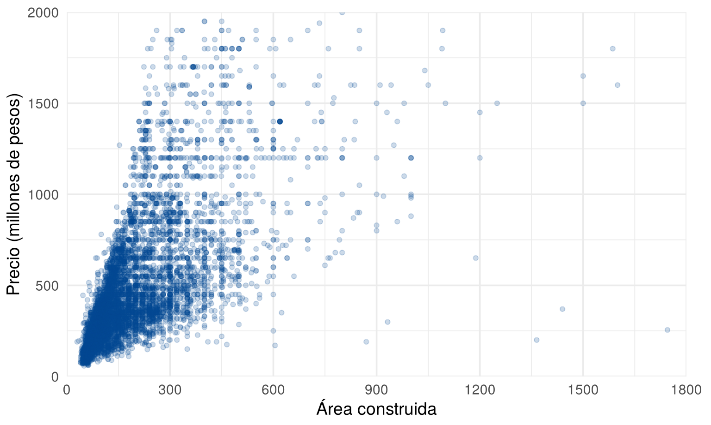
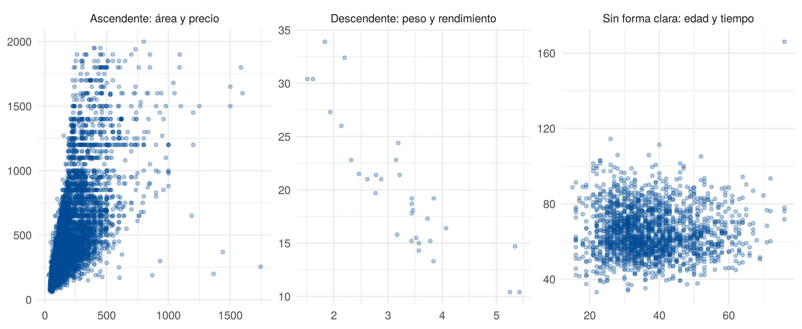
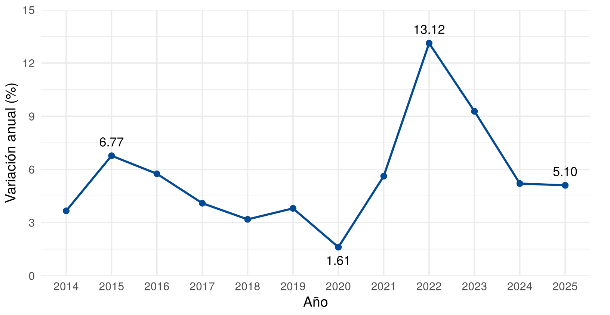
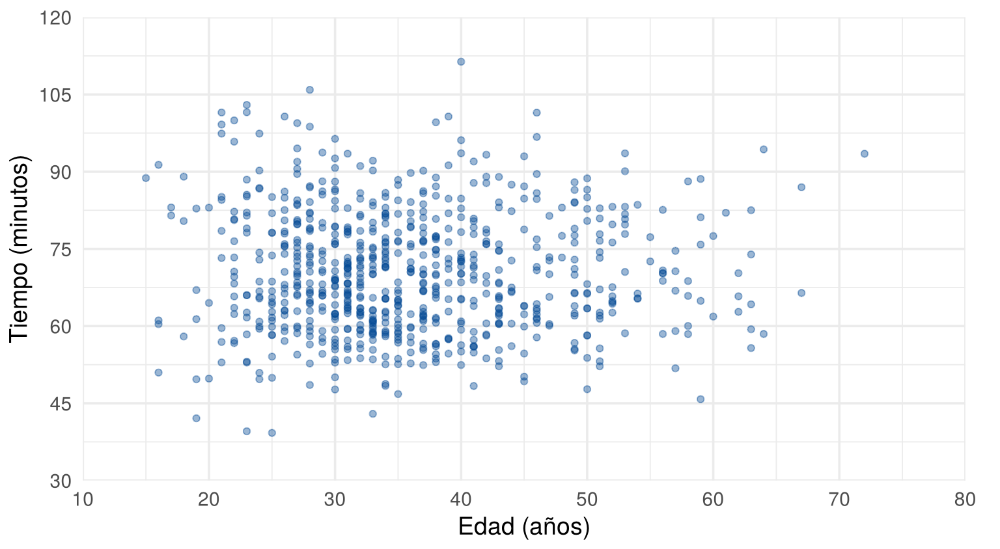
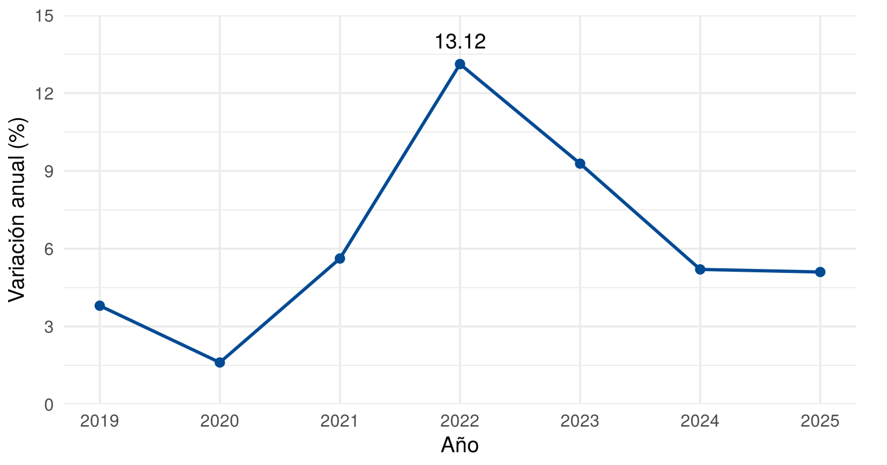

Hasta ahora se han graficado variables una por una. Esta página presenta los dos gráficos más usados para ver cómo se comporta una variable junto a otra: el gráfico de dispersión, que muestra la relación entre dos variables cuantitativas, y el gráfico de líneas, que muestra cómo cambia una variable en el tiempo. Para ver más opciones, cada sección enlaza a From Data to Viz.
Esta página usa CarreraLuz22 y
vivienda_faltantes, del paquete
paqueteMETODOS, los datos mtcars, incluidos en
R, y el paquete ggplot2. Los bloques de
código se ejecutan en orden, porque algunos usan objetos creados en
bloques anteriores.
library(paqueteMETODOS)
data("CarreraLuz22")
data("vivienda_faltantes")library(ggplot2)¿Para qué sirve? Para ver la relación entre dos variables cuantitativas, reconocer tendencias e identificar valores alejados. Cada punto corresponde a una observación, es decir, a un par de valores \((x_i, y_i)\).
¿Cómo se hace? Se usa geom_point(). Con
muchos datos, el argumento alpha vuelve transparentes los
puntos para que se note dónde se acumulan.
viviendas <- subset(vivienda_faltantes, !is.na(preciom) & !is.na(areaconst))
ggplot(viviendas, aes(x = areaconst, y = preciom)) +
geom_point(color = "#034A94", alpha = 0.2, size = 1.5) +
scale_x_continuous(limits = c(0, 1800), breaks = seq(0, 1800, 300), expand = c(0, 0)) +
scale_y_continuous(limits = c(0, 2000), breaks = seq(0, 2000, 500), expand = c(0, 0)) +
labs(x = "Área construida", y = "Precio (millones de pesos)") +
theme_minimal(base_size = 14) +
theme(plot.margin = margin(10, 20, 5, 5))
Área construida y precio de las viviendas
¿Cómo se interpreta? Se observan la dirección de la nube, su forma, qué tan agrupados están los puntos y si hay puntos alejados. En la figura, el precio tiende a subir con el área, aunque hay viviendas de área parecida con precios muy diferentes, y algunas de más de 1200 de área tienen precios bajos.
Una nube ascendente sugiere una relación positiva,
una descendente indica una relación negativa, y una
sin forma clara sugiere que no hay relación. La
siguiente figura muestra los tres casos. El segundo usa
mtcars: el peso del auto frente a las millas por galón, que
miden el rendimiento. Más millas por galón significa menos consumo.
patrones <- rbind(
data.frame(caso = "Ascendente: área y precio",
x = viviendas$areaconst, y = viviendas$preciom),
data.frame(caso = "Descendente: peso y rendimiento",
x = mtcars$wt, y = mtcars$mpg),
data.frame(caso = "Sin forma clara: edad y tiempo",
x = CarreraLuz22$edad, y = CarreraLuz22$timerun / 60)
)
ggplot(patrones, aes(x = x, y = y)) +
geom_point(color = "#034A94", alpha = 0.3, size = 1.2) +
facet_wrap(~ caso, scales = "free") +
labs(x = NULL, y = NULL) +
theme_minimal(base_size = 12)
Tres patrones en gráficos de dispersión
¿Qué cuidados tener?
alpha,
se puede reducir su tamaño o hacer un panel por grupo (Holtz y
Healy).Ver más: dispersión, puntos superpuestos, densidad 2D, mapa de calor y burbujas.
¿Para qué sirve? Para ver cómo cambia una variable a lo largo del tiempo, es decir, una serie de tiempo. Permite:
¿Cómo se hace? Se usa geom_line(), y
geom_point() marca los datos observados. Cuando el eje
horizontal tiene un orden, como el tiempo, conviene unir los puntos,
porque ayuda a percibir la secuencia (Wilke, 2019).
El ejemplo usa la variación anual del IPC de Colombia a diciembre,
publicada por el DANE (ver Referencias).
inflacion <- data.frame(
anio = 2014:2025,
variacion = c(3.66, 6.77, 5.75, 4.09, 3.18, 3.80, 1.61, 5.62, 13.12, 9.28, 5.20, 5.10)
)
destacados <- subset(inflacion, anio %in% c(2015, 2020, 2022, 2025))
destacados$posicion <- c(-1, 1.9, -1, -1)
ggplot(inflacion, aes(x = anio, y = variacion)) +
geom_line(color = "#034A94", linewidth = 1) +
geom_point(color = "#034A94", size = 2.5) +
geom_text(data = destacados, aes(label = sprintf("%.2f", variacion), vjust = posicion),
size = 4.5) +
scale_x_continuous(breaks = 2014:2025) +
scale_y_continuous(limits = c(0, 15), breaks = seq(0, 15, 3), expand = c(0, 0)) +
labs(x = "Año", y = "Variación anual (%)") +
theme_minimal(base_size = 14) +
theme(panel.grid.minor.x = element_blank(), plot.margin = margin(10, 20, 5, 5))
Variación anual del IPC en Colombia a diciembre, 2014 a 2025. Fuente: DANE
¿Cómo se interpreta? Se sigue la línea de izquierda a derecha: la tendencia, los cambios de dirección y los valores máximos y mínimos. En la figura, la variación anual bajó hasta 1.61 % en 2020, subió hasta 13.12 % en 2022 y fue de 5.10 % en 2025. La figura muestra qué pasó y cuándo, pero no por qué pasó. Tampoco muestra lo que ocurrió entre un punto y el siguiente, porque cada punto es el dato de diciembre.
¿Qué cuidados tener?
Ver más: gráfico de líneas, gráficos de espagueti, unir los puntos y dispersión conectada.
| Problema | Causa | Solución |
|---|---|---|
| Se afirma que una variable causa la otra | Se confunde relación con causa | Describir la relación sin atribuir causas |
| Los puntos forman una mancha | Hay muchos datos en el mismo lugar | Usar alpha, puntos pequeños o paneles |
| Los puntos de una serie no muestran la secuencia | Falta unir los puntos | Agregar geom_line() |
geom_path: Each group consists of only one observation |
La variable del eje horizontal es un factor | Usar aes(group = 1) o una variable
numérica |
| Demasiadas líneas | Se dibujan todas con la misma importancia | Resaltar una serie o usar paneles |
Haga un gráfico de dispersión de la edad y el tiempo de carrera, en minutos, de las mujeres. Describa el patrón.
corredoras <- subset(CarreraLuz22, sex == "Mujer")
corredoras$minutos <- corredoras$timerun / 60
ggplot(corredoras, aes(x = edad, y = minutos)) +
geom_point(color = "#034A94", alpha = 0.4) +
scale_x_continuous(limits = c(10, 80), breaks = seq(10, 80, 10), expand = c(0, 0)) +
scale_y_continuous(limits = c(30, 120), breaks = seq(30, 120, 15), expand = c(0, 0)) +
labs(x = "Edad (años)", y = "Tiempo (minutos)") +
theme_minimal(base_size = 14) +
theme(plot.margin = margin(10, 20, 5, 5))
Edad y tiempo de las corredoras
La nube no tiene una dirección clara: en casi todas las edades hay tiempos altos y bajos.
Observe la figura de la variación anual del IPC. Indique cuál es el eje de valores, cuál es el eje de conceptos y cuál es la fuente. ¿Por qué esta figura no necesita leyenda?
El eje de valores es el vertical, con la variación anual en porcentaje. El eje de conceptos es el horizontal, con los años. La fuente es el DANE. No necesita leyenda porque solo tiene una línea.
Con la figura de la variación anual del IPC, escriba una frase para cada nivel de lectura.
Estas son respuestas posibles:
Con la tabla inflacion, grafique solo los años de 2019 a
2025. Marque con una etiqueta el valor máximo.
reciente <- subset(inflacion, anio >= 2019)
maximo <- subset(reciente, variacion == max(variacion))
ggplot(reciente, aes(x = anio, y = variacion)) +
geom_line(color = "#034A94", linewidth = 1) +
geom_point(color = "#034A94", size = 2.5) +
geom_text(data = maximo, aes(label = variacion), vjust = -1, size = 4.8) +
scale_x_continuous(breaks = 2019:2025) +
scale_y_continuous(limits = c(0, 15), breaks = seq(0, 15, 3), expand = c(0, 0)) +
labs(x = "Año", y = "Variación anual (%)") +
theme_minimal(base_size = 14) +
theme(panel.grid.minor.x = element_blank(), plot.margin = margin(10, 20, 5, 5))
Variación anual del IPC, 2019 a 2025. Fuente: DANE
Última revisión: 5 de noviembre de 2026.